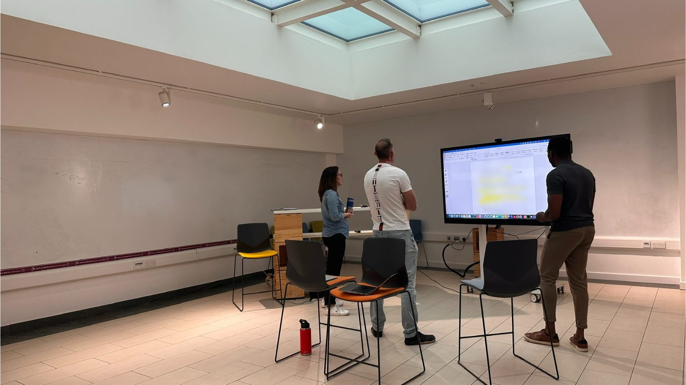

Two sections. The first is what gets distilled from sessions: small essays on what the practice keeps revealing. The second is the leaders I’ve worked with, told their way.
Nothing here is selling. This is the room, after the work.
Two sections. The first is what gets distilled from sessions: small essays on what the practice keeps revealing. The second is the leaders I’ve worked with, told their way.
Nothing here is selling. This is the room, after the work.

01· Lessons
Each piece below is a single observation from a single client, anonymous but real. Read one, or read them all.
I had a session with a very experienced business development manager. He’d been thinking about his situation for a long time and seemed to already know the options available to him.
I thought I knew the answer too, but as I regularly do, I dropped my preconclusions and went in blank, asking questions.
The more I asked, the more we noted on the board. Once it was all out, we looked at what was there and traced the connections that became visible. What seemed obvious to me turned into natural options and routes he hadn’t yet seen, including a new direction he hadn’t considered.
The lightbulbs started turning on. He became visibly excited, and we went deeper into the new space of possibility.
Sometimes the answer is staring you in the face. You can’t see it because you’re looking for something more complicated. It can be too simple to see as anything.
A lot of coaches say the answer is always in you. Sometimes it is. Sometimes it isn’t. Sometimes it only comes from a conversation with someone who has a different perspective.
I was working with a business owner so focused on the present that the future he could see had very little detail. That bothered him. Alongside the work of freeing up his time through delegation, we had whiteboard sessions to explore what he really wanted.
Looking at his FITT16 report, I was able to help him put words to what he’d felt inside but had not been able to articulate. He could have arrived at it eventually on his own, but we generated that understanding there and then, and fleshed it out over a few more sessions.
That vision is now what he’s working towards daily.
The answer isn’t always in you. Sometimes it’s in the room between you and the right thinking partner.
A pattern I’ve noticed across many whiteboard sessions: leaders have epiphanies that come not from new information, but from finally seeing what they already knew laid out in front of them.
One client put it like this: sometimes decisions only become clear when you see all the elements written out on the page.
The common thread is that thought held in the head is fundamentally different from thought made visible. The same content, externalised on a board, behaves differently. Connections become visible. Weighting becomes possible. A decision that felt impossible internally becomes obvious externally.
The whiteboard isn’t a teaching tool. It’s a thinking tool. The lesson is what people see in their own thinking once they can actually see it.
A client of mine had been promoted to COO. In the first weeks she felt overwhelmed: too much new information, too many issues landing at once, and a real uncertainty about what she was actually supposed to be doing.
We took a whiteboard session and pushed past the noise. What had she noticed during her orientation? What had she seen while still in her last role? What were the key things her stakeholders were saying to her, repeatedly?
We mapped what we had against the things that mattered: impact if solved, complexity, time, resources available. The picture changed quickly. By the end of the hour she had a short list of the right things to work on first, in the right order.
The job of a senior leader isn’t to handle everything that lands. It’s to know which things to work on. Sometimes that means having someone in the room helping you sort signal from noise out loud.
There’s a reason you don’t know what to do, and it’s that you’re avoiding a particular path, not because it’s wrong, but because you have so little data on how to handle it. It feels like a dead end. So you keep choosing the paths you know.
A client of mine has a perfectionist tendency. He sticks to familiar routes that reliably produce the outcomes he wants. He’s very successful at it, but he’s not the most flexible, and he knows that isn’t to his advantage. There are options he can see are available to him that he doesn’t explore, because exploring them isn’t his natural inclination.
Whiteboard sessions have given him the confidence to map what those new options actually look like: what implementation would involve, what the early steps would be, what the risks really are.
The path you don’t take isn’t always the wrong path. Sometimes it’s just the one you’ve never had time to think about properly.
A leader I worked with was feeling imposter syndrome after a new promotion. He didn’t feel worthy of taking on the role. The internal narrative had taken over: I shouldn’t be here, I’m not the right person, somebody’s about to notice. He couldn’t argue his way out of it from the inside.
So I asked him question after question about what he’d actually achieved. We put it all on the board. The work, the wins, the moments that had earned him the seat. As the board grew, so did his smile.
He didn’t need new information. He had all of it already. What he needed was to see who he was, how he’d got there, and why he was deserving of the role he’d been offered, laid out in front of him where the imposter narrative couldn’t argue against it.
He stepped into the role with new energy.
Confidence often isn’t about adding something. It’s about seeing what’s already there clearly enough that the inner critic loses the argument.
Two partners had been handed a remarkable opportunity. An inventor had brought them a product he had no interest in commercialising himself; the business side was theirs to build. The product was revolutionary. The applications looked endless.
That was the problem. They had so many options they were overwhelmed, and the first option that had occurred to them had already started to feel like the obvious choice.
We hired a white room for the day. Out with the whiteboard pen. We spent a full session breaking down the product, the applications, the players in each adjacent space, the partnerships available, the resources each direction would require.
By the end of a vibrant day’s discussion, the best options weren’t just clearer. They were obvious. And the option they’d walked in thinking was the answer wasn’t even in the top three. They left with a clear action plan: who to contact, who to hire, what came next.
The obvious choice rarely survives the longer list. Most strategic mistakes happen when the second option never gets named.
02· The People I Work With
A small ongoing series.
Once a week, sometimes more, I share something about a leader I’ve worked with. Their work, their character, what makes them remarkable. These are the three most recent.
Today I’m celebrating another past client: Tim Cook, now an AVP in Wisconsin. When I first met Tim, he struck me as quietly pensive: incredibly intelligent, observant, and astute. The kind of person who’s listening and thinking more than he’s saying…
Read on LinkedInOver the years I’ve had the privilege of coaching some genuinely impressive leaders. Today I want to celebrate one of them: Ashley. Working with Ashley was a privilege. She’s deeply thoughtful, experienced, and well-travelled, yet so open to learning…
Read on LinkedInOli is one of my favourite types of clients to work with because he’s both an entrepreneur and a craftsman. He’s completely committed to his craft. Having finished top of his class, he developed in the toughest of kitchens…
Read on LinkedInFollow the full series on LinkedIn
03· Next
You’ll know whether the practice fits you.